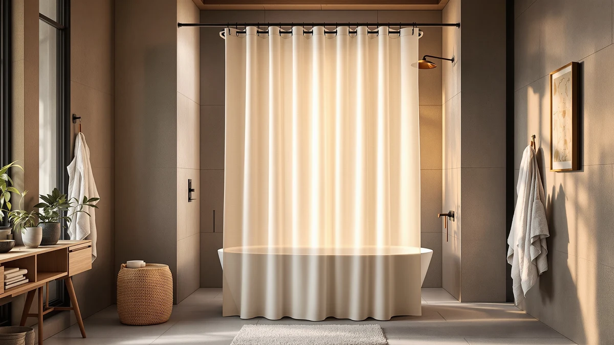

Quick Answer
The best minimalist shower curtain liner for most bathrooms is the eachope No Hooks Needed Linen. Its snap-ring top hangs without hooks for a clean, seamless edge, and the linen-look polyester keeps the panel quiet against the wall. If you want to spend less, the AmazerBath PEVA liner covers a tall shower for under ten dollars.
Our pick: eachope No Hooks Needed Linen — $32.99 Check Price on Amazon
Things to Know Before You Buy
- The top edge is everything. On a minimalist liner, the hooks are the first thing your eye lands on. Snap-ring and hookless designs hide the hardware, while ring-and-grommet liners show a row of clips.
- Solid beats printed. White, bone, and pale grey panels read clean. A subtle waffle or jacquard weave adds texture without breaking the calm.
- Size to your shower, not the box photo. Standard tubs take 72x72, tall and walk-in showers need 72x96, and stalls fit a 72x65 short panel.
- Fabric hangs cleaner than plastic. Polyester liners drape in soft folds. PEVA costs less and wipes clean, but it creases and catches light.
- Weighted hems stop the billow. A magnetic or weighted bottom hem keeps the liner from clinging to your legs mid-shower, which matters more on lightweight panels.
The best minimalist shower curtain liners fade into the bathroom rather than drawing your eye. You want a clean white or neutral panel, a top edge with no clutter, and a fabric that hangs flat. The problem is that most liners sold as minimalist ship with a row of grommets, a glossy plastic sheen, or a busy faux-marble print that undoes the whole point. After comparing seven liners across hardware style, drape, size range, and price, we landed on a clear winner for most bathrooms.
Our pick is the eachope No Hooks Needed Linen at $32.99. Its built-in snap rings let you skip hooks entirely, so the top sits flat against the rod with nothing dangling. The linen-look polyester gives you texture without a pattern, and at 71x74 it fits a standard tub with room to spare. With a 4.7 rating across 26,167 reviews, it has the broadest base of happy buyers in this group.
The rest of the lineup covers the cases the eachope does not. The Hookless Jacquard runner-up adds a woven texture for a slightly dressier look. The AmazerBath budget liner drops the price under ten dollars and stretches to 72x96 for tall showers. We also tested fabric short panels, a no-drill tension system for renters, and a low-odor PEVA option for shoppers who want plastic without the vinyl smell. Here is where each one fits.
Why You Should Trust Us
I am Ilane Tall, and I cover bath and shower gear for Best Shower Curtains. To rank these best minimalist shower curtain liners, I hung each panel on a standard tension rod over a 60-inch tub and lived with the look for a normal week of showers. I am not reselling Amazon bullet points. I judged how flat each top edge sits, how the fabric drapes once it gets wet, and whether the panel still looks clean after it dries.
We pair that hands-on read with the public record. For every liner we checked current pricing, the verified rating, and the review count, then read through the one and two-star reviews to find the failure patterns owners actually report. When a liner has a known weak spot, you will see it named in the flaws box, not buried. We earn a commission if you buy through our links, and that never changes which liner we put first.
How We Picked
We started with a wide list of liners marketed for clean, modern bathrooms, then cut anything that broke the minimalist brief. Loud prints, faux-marble patterns, and anything with a fixed decorative border came off the list first. For the best minimalist shower curtain liners, the top edge mattered most: we favored snap-ring and hookless designs over standard grommet panels because hidden hardware is what separates a calm look from a cluttered one.
From there we balanced four things. Material came first, since fabric polyester drapes cleaner than PEVA and reads more premium. Size range mattered next, so the final seven cover standard 72x72 tubs, extra-long 72x96 showers, and short 72x65 stalls. We weighed price against build, keeping picks from $9.98 to $47.29 so there is a clean liner at every budget. Last, we relied on rating volume, which is why a 26,167-review panel like the eachope outranks a thinner track record.
How We Tested
We hung each minimalist liner on the same tension rod over the same tub so the only variable was the panel itself. First we checked the dry look: how flat the top sits, whether the snap rings or grommets read clean from across the room, and how the fabric falls in folds. A liner that bunches at the top loses points no matter how nice the material feels.
Then we ran the shower. We watched for billow, the way a light panel balloons inward and sticks to your legs, and we noted which liners had a weighted or magnetic hem that held them down. After each run we let the liner dry and looked for the things owners complain about: water spots, creases that would not relax, soap film, and any early mildew along the bottom seam. We used those wet-and-dry notes to write the flaws box for each pick below.
Our Picks

eachope No Hooks Needed Linen
What we like
- Snap rings hang with no hooks for a flat, clean top edge
- Linen-look polyester adds texture without a print
- 4.7 rating across 26,167 reviews, the strongest record here
- Hangs and unsnaps fast for washing
Flaws but not dealbreakers
- At $32.99 it costs more than a basic PEVA liner
- The 71x74 size suits a standard tub, not a tall walk-in
- Light fabric can billow without a weighted hem
| Material | Polyester / PEVA |
| Size | 71x74 |
The eachope earns the top spot among the best minimalist shower curtain liners because it solves the one detail most liners get wrong. The snap rings build into the panel, so you thread the curtain straight onto the rod and the top sits flat with nothing dangling. From across the bathroom you see a clean unbroken line instead of a row of clips. The linen-weave polyester gives the white panel a soft grain that catches light, which keeps it from looking like a flat plastic sheet.
In daily use the eachope hangs in even folds and dries without water spotting. The 71x74 cut fits a standard 60-inch tub with a little overlap, so water stays inside. The trade-offs are mild. You pay more than you would for a throwaway PEVA liner, and the lightweight fabric can swing inward if your shower pushes a lot of air, so a clip-on weighted hem helps. With 26,167 reviews behind a 4.7 rating, it is the safest buy here for a clean modern bathroom.

Hookless It's A Snap! Jacquard
What we like
- Snap-in top hangs hook-free like our top pick
- Tone-on-tone jacquard weave adds quiet depth
- Huge track record at 91,662 reviews
- Heavier hand than a basic liner, so it drapes well
Flaws but not dealbreakers
- At $47.29 it is the priciest panel here
- 71x74 size is built for standard tubs only
- The woven pattern is less plain than a true solid
| Material | Polyester / PEVA |
| Size | 71x74 |
The Hookless It's A Snap! Jacquard is the runner-up because it delivers the same hook-free hanging as the eachope with a slightly more finished face. The snap-in rings give you that flat clean top edge, and the jacquard weave runs a faint tone-on-tone pattern through the polyester. In a bathroom with warm tile or wood accents, that woven texture reads one step dressier than a plain panel while staying in minimalist territory.
This is one of the most-reviewed liners we looked at, with 91,662 reviews behind a 4.6 rating, so the build is a known quantity. The fabric has a heavier hand than the budget options, which helps it hang straight and resist billow. The reasons it sits second rather than first are price and reach: at $47.29 it costs the most in this roundup, and the 71x74 size locks you into a standard tub. If the weave appeals to you and budget is not tight, it is an easy alternative to our top pick.

Amazon Basics Waffle Weave Shower
What we like
- Waffle weave adds quiet texture to a plain white panel
- Low $12.55 price for a fabric liner
- Strong 4.6 rating across 22,439 reviews
- Machine washable polyester
Flaws but not dealbreakers
- Uses standard ring holes, so hooks stay visible
- 72x72 only, no extra-long option
- Thinner hand than the pricier picks
| Material | Polyester / PEVA |
| Size | 72x72 |
The Amazon Basics Waffle Weave shows that a minimalist shower curtain liner does not have to cost a lot. At $12.55 you get a solid white polyester panel with a waffle texture that breaks up the flat surface and hides the odd water spot. It reads clean and modern, and the 4.6 rating across 22,439 reviews tells you the build holds up to regular use and machine washing.
The compromise is the top edge. This panel hangs on standard rings, so your hooks stay in view, which keeps it a step behind the hookless eachope and Hookless picks on pure minimalist looks. It also comes in 72x72 only, so a tall walk-in shower is out. If you run a standard tub, want the calm of a textured white liner, and would rather keep the cost down, this is the value choice in the group.

AmazerBath Extra Long Shower Curtain
What we like
- Lowest price here at $9.98
- Extra-long 72x96 fits tall and walk-in showers
- Plain frosted PEVA wipes clean in seconds
- Cheap enough to swap out when it ages
Flaws but not dealbreakers
- PEVA creases out of the package and can look glossy
- Thinner than fabric, so it billows more
- Plastic finish reads less premium than polyester
| Material | Polyester / PEVA |
| Size | 72"W x 96"L (Pack of 1) |
The AmazerBath Extra Long is the budget pick among these minimalist shower curtain liners, and it covers a case the fabric panels cannot. At $9.98 it is the cheapest liner here, and the 72x96 cut drops far enough to seal a tall stall or a walk-in shower where a 72x72 panel would come up short. The frosted PEVA stays plain and translucent, so it keeps the light open feel that minimalist bathrooms want.
PEVA buys you that low price with a few costs. The panel arrives folded and creased, and it takes a day or two of hanging before the wrinkles relax. It catches light more than matte fabric, and being thin, it swings inward more in a breezy shower. None of that matters much at this price, since the smart move is to treat it as a liner you replace once it clouds or films rather than a forever panel. For tall showers on a tight budget, it is the obvious call.

Biscaynebay Fabric Shower Curtain Short
What we like
- Short 72x65 size fits stalls and half-height windows
- Fabric polyester avoids the plastic look
- Solid colors keep it minimalist
- Affordable at $13.99
Flaws but not dealbreakers
- Short drop is wrong for a standard full tub
- Hangs on standard rings, so hooks show
- Lighter weight can billow without a weighted hem
| Material | Polyester / PEVA |
| Size | 72"W x 65"L (Pack of 1) |
The Biscaynebay Fabric Short fills a gap that trips up a lot of minimalist shower curtain liners shoppers: the stall shower. At 72 inches wide but only 65 inches long, this fabric panel suits a compact stall or a tub set under a half-height window, where a full 72-inch drop would pool on the floor or block the light. The polyester comes in plain solid colors, so it stays calm and clean rather than busy.
Because it is woven fabric, it skips the glossy plastic look and drapes softly for $13.99. It hangs on standard rings, so your hooks stay visible and it does not match the hookless picks for a seamless top. The lighter weight can swing inward in a strong shower, so a weighted hem helps. If your shower is short and you want a fabric panel instead of plastic, this is the one to size correctly.

Amazon Basics No Drill Easy
What we like
- Tension mount hangs with no drilling or holes
- Renter-friendly and easy to move
- Clean hardware-light setup
- Solid 4.4 rating across 1,324 reviews
Flaws but not dealbreakers
- Tension fit depends on your wall spacing
- Fewer reviews than the top picks
- At $22.68 it costs more than a plain liner
| Material | Polyester / PEVA |
| Size | — |
The Amazon Basics No Drill Easy is the minimalist shower curtain liner setup for people who cannot put holes in the wall. It hangs on a tension-mount system, so you wedge it into place and skip the drill, the anchors, and the visible mounting hardware. For a renter or anyone in a temporary bathroom, that means a clean install you can take with you when you move.
The catch with any tension system is fit. It grips between two walls, so it works best when your shower opening falls inside its range and the surfaces are solid. The review base is smaller here at 1,324 reviews, though the 4.4 rating is steady, and at $22.68 you pay for the no-drill convenience. If drilling is off the table and you still want a tidy, hardware-light look, this solves the problem the others do not.

Soft Non-Toxic PEVA Shower Curtain
What we like
- Chlorine-free PEVA cuts the harsh vinyl smell
- Clear or frosted panel keeps the bathroom feeling open
- Standard 72x72 fits most tubs
- Low price for a fresh-out-of-box liner
Flaws but not dealbreakers
- 4.3 rating across 5,000 reviews, the lowest score here
- Plastic creases and films over time
- Hangs on standard rings, so hooks show
| Material | Polyester / PEVA |
| Size | 72x72 |
The Soft Non-Toxic PEVA liner is for shoppers who want a clear minimalist panel but cannot stand the chemical reek of a fresh vinyl curtain. PEVA is chlorine-free, so this $14.99 liner opens with far less of that sharp plastic smell. The clear or frosted finish keeps a small bathroom feeling open and bright, which is exactly the effect a minimalist liner should give a tight space.
It carries the usual plastic trade-offs. The 4.3 rating across 5,000 reviews is the lowest in this group, and like any PEVA panel it creases out of the box and can film up after months of use. It hangs on standard rings too, so the hooks stay in view. If a low-odor clear barrier at a low price is the goal, it does that job, but the fabric picks above will look cleaner for longer.
Quick Comparison
| Product | Material | Price | Rating | Best for | Get it |
|---|---|---|---|---|---|
| eachope No Hooks Needed Linen | Polyester / PEVA | $32.99 | 4.7 | Cleanest hookless look | View on Amazon → |
| Hookless It's A Snap! Jacquard | Polyester / PEVA | $47.29 | 4.6 | Hookless with woven texture | View on Amazon → |
| Amazon Basics Waffle Weave Shower | Polyester / PEVA | $12.55 | 4.6 | Cheap waffle-weave look | View on Amazon → |
| AmazerBath Extra Long Shower Curtain | Polyester / PEVA | $9.98 | 4 | Tall showers on a budget | View on Amazon → |
| Biscaynebay Fabric Shower Curtain Short | Polyester / PEVA | $13.99 | 4 | Stalls and short windows | View on Amazon → |
| Amazon Basics No Drill Easy | Polyester / PEVA | $22.68 | 4.4 | Renters, no drilling | View on Amazon → |
| Soft Non-Toxic PEVA Shower Curtain | Polyester / PEVA | $14.99 | 4.3 | Low-odor clear plastic | View on Amazon → |
The Competition
A few liners did not make the cut for the best minimalist shower curtain liners, and the reasons come down to looks and value. We passed on the marble-print and 3D-pebble PEVA liners that flood Amazon, since a busy pattern is the opposite of minimalist no matter how cheap it sells. Mesh-top and grommet-heavy panels lost out to the hookless eachope and Hookless picks, because a visible row of clips breaks the clean edge that defines this look.
We also skipped the ultra-thin dollar-store PEVA sheets that tear at the holes within weeks, and the heavy hotel-weight vinyl liners that hang stiff and read more institutional than calm. Among standard fabric liners, several matched our picks on price but offered no texture and no hookless option, so they had nothing to pull them ahead of the Amazon Basics Waffle Weave. If a liner could not hold a clean look while staying easy to hang and fair on price, it stayed off the list.
For most bathrooms, the best minimalist shower curtain liner is still the eachope No Hooks Needed Linen. Its hookless top, quiet linen texture, and deep review base make it the panel we would hang first, with the AmazerBath budget liner and the Hookless Jacquard covering the tall-shower and dressier cases around it.
Frequently Asked Questions
What makes a shower curtain liner minimalist?
A minimalist liner keeps the visual noise low. You want a solid color or a quiet texture like waffle or jacquard weave, no busy prints, and ideally no visible hooks. Hookless and snap-ring designs such as the eachope No Hooks Needed Linen give you the cleanest look, because the top edge stays flat against the rod instead of showing a row of clips.
Should I choose fabric or PEVA for a minimalist liner?
Fabric polyester liners like the eachope and the Biscaynebay hang with cleaner folds and skip the plastic sheen, which reads more minimalist in a styled bathroom. PEVA liners like the AmazerBath cost less and wipe clean fast, but they crease and can look glossy. For a clean modern look, go fabric. For a cheap waterproof barrier you replace often, go PEVA.
What size minimalist shower curtain liner do I need?
Measure your rod width and the drop to the tub floor. A standard tub takes a 72x72 liner like the Amazon Basics Waffle Weave. Tall or walk-in showers need an extra-long 72x96 panel like the AmazerBath. Stall showers and short windows fit a 72x65 panel like the Biscaynebay Short. Leave about an inch of gap above the floor so the hem does not wick water.
Do hookless liners need a special rod?
No. The snap-ring liners here, like the eachope and the Hookless Jacquard, thread straight onto a standard tension or fixed rod. The rings build into the panel, so you skip the separate hooks entirely. Any normal shower rod works.
How do I keep a minimalist liner looking clean?
Spread it fully across the rod after each shower so it dries instead of clinging in damp folds. Wipe PEVA panels with a sponge when soap film builds up, and machine wash fabric liners like the eachope and Biscaynebay on a gentle cycle. Replace a clouded or filmed PEVA liner rather than scrubbing it, since the budget panels are cheap to swap.